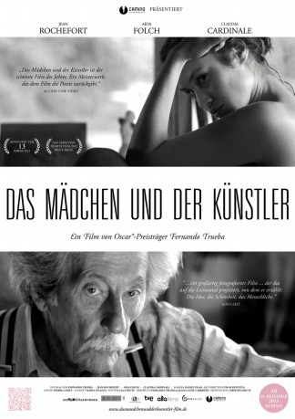
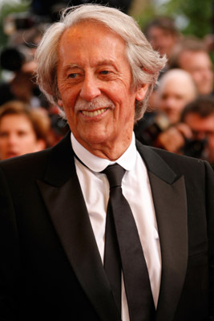

#3379 Das Mädchen und der Künstler
Alternativ: The Artist and the Model (Englischer Titel)
 
 IMDB-Wertung: 6.7 / 10
IMDB-Wertung: 6.7 / 10  Metascore: 53
Metascore: 53 
1943 im besetzten Frankreich. In einem kleinen Dorf unweit der spanischen Grenze lebt der alte Bildhauer Marc Cros mit seiner Frau Léa. Der 80-jährige Künstler hat schon lange keine Skulptur mehr geschaffen. Er hat zwei Kriege erlebt und erwartet nicht mehr viel vom Leben und der Menschheit. Eines Tages aber trifft seine Frau Léa die junge Katalanin Mercè, die auf der Flucht vor den Truppen Francos ist, und nimmt sie kurzerhand mit nach Hause. Das Ehepaar bietet Mercè an, in der Werkstatt des Bildhauers zu wohnen und im Gegenzug Modell für das letzte Werk des alten Cros Modell zu stehen. Langsam entwickelt sich eine wundervolle Freundschaft zwischen der jungen Frau, deren Leben gerade erst begonnen hat, und dem Künstler, der das Ende seines Lebens nahen sieht.
Jahr: 2012
Dauer: 105 Minuten
FSK: 6
Land: Spanien Studio: Arthaus FilmverleihTonspuren:
Untertitel: Deutsch,
Auflösung: 1080p (1920x816) Größe: 3205 MB
Genre: Drama
Regisseur: Fernando Trueba
Drehbuch: Jean-Claude Carrière, Fernando Trueba
Soundtrack:
Darsteller:
-  Jean Rochefort als Marc Cros
- Aida Folch als Mercè
 Claudia Cardinale als Léa
Claudia Cardinale als Léa Götz Otto als Werner
Götz Otto als Werner Chus Lampreave als María
Chus Lampreave als María- Christian Sinniger als Emile
- Martin Gamet als Pierre
- Mateo Deluz als Henri
- Simon Guilbert als Cura
- Alain Torrent als Campesino mercado
- Michel Jaquesmin als Patrón café
- Dorian Astrou als Niños
- Albam Riou als Niños
- Guillaume Virag als Niños
- Sarah Villesvieille als Niños
- Aniol Llop als Niños
- Anna Julia Chafer als Niños
- Liam Chafer als Niños
- Aniol Cañada als Niños
- Berta Cañada als Niños
- Carla Brunsó als Niños
- Aina Bramona als Niños
- Sergi Comerma als Niños
- Jan Aranda als Niños
- Marc Fernandez als Niños
- Pol Fernandez als Niños
- Mireia Masdeu als Niños
- Adrià Andurell als Niños
- Quim Güell als Niños
- Genís Cros als Niños
- Miquel Puig als Niños
- Ramon Codina als Músico plaza
- Agustí Planadecursach als Chófer
- Michel Brigand als Manos
Datei: X:\2013(I-M)\Mädchen und der Künstler, Das (2012, FSK6, 1920x816).mkv seit 29.03.2016
Festplatte: HD 2013(I-Z)-2014(A-Z)
 Es gibt insgesamt 89 Filme in der Gruppe '2013(I-M)'
Es gibt insgesamt 89 Filme in der Gruppe '2013(I-M)'